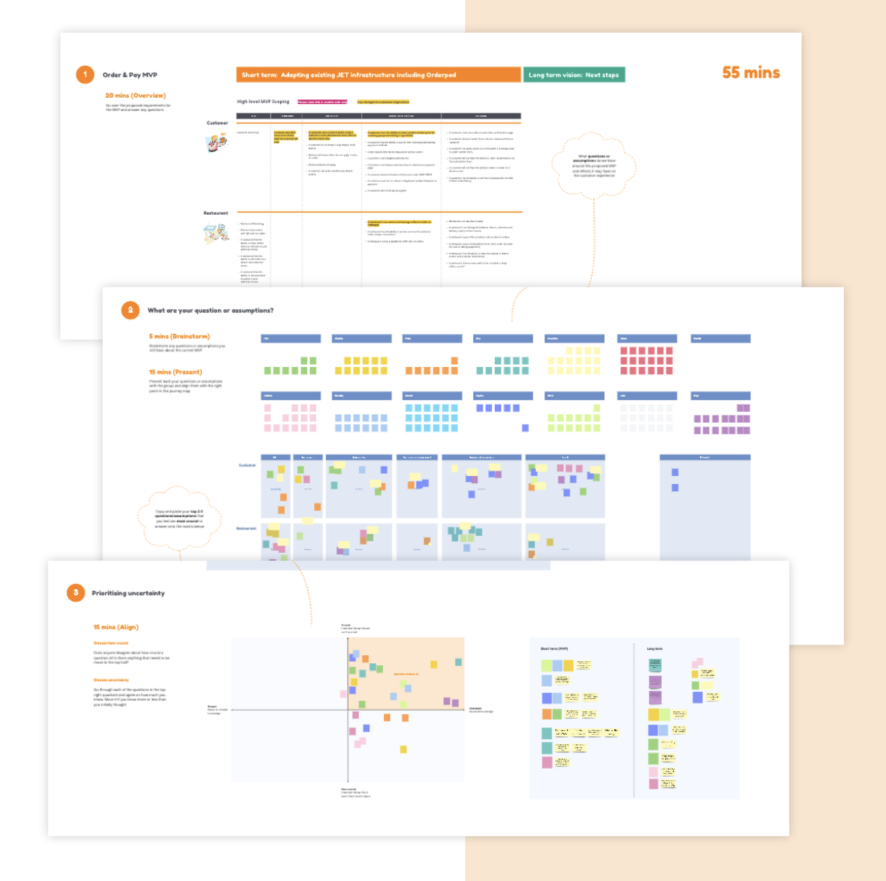
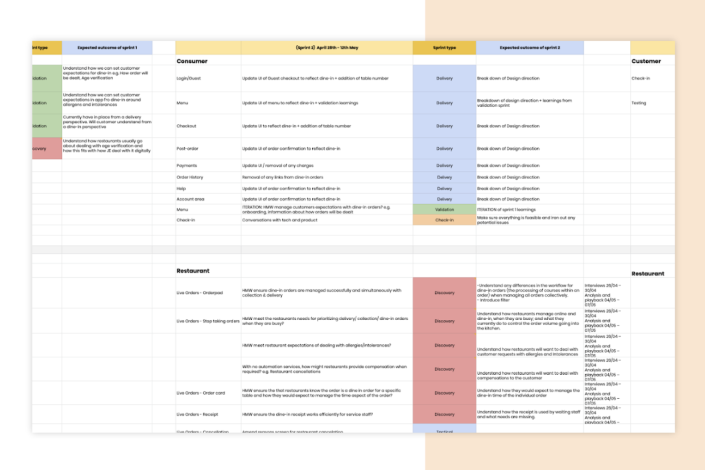
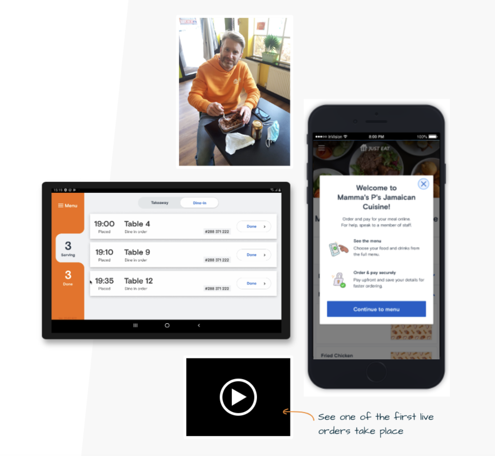

Just Eat Dine-In
Pioneering a new dine-in proposition as the UK reopened from lockdown — leading a small team to a shipped MVP in 11 weeks, then a Phase 2 vision built on real customer behaviour.
As restaurants reopened, Just Eat was perfectly placed to help them dine in.
In April 2021, with the UK government signalling a May 17th reopening for dine-in, our independent restaurant partners faced a nervous return — safety regulations on one side, cautious customers on the other.
We already integrated with thousands of them, which put Just Eat in a unique position to help during a pivotal moment.
The brief was clear and ambitious: become the essential partner for dine-in restaurants. An innovations-team survey had already surfaced clear customer appetite for contactless ordering and payment.
My job was to turn that opening into a shippable experience — fast — without losing sight of what customers and partners actually needed.
Lead a small team to an MVP in three months — and keep everyone aligned.
The constraint was the headline: a credible MVP, with a tight three-month deadline, across product and tech pillars. My leadership was as much about focus and alignment as it was about design.


Kicked off April 14th. Live by June 30th.
We launched the MVP to multiple restaurants across the UK — and saw a significant increase in dine-in orders in the first week alone. Eleven weeks from blank page to a live, ordering product, under a hard external deadline.

With the MVP live, I pushed for the exceptional experience next.
The MVP was shaped by the clock. For Phase 2 I refocused us on desirability first — understanding partners and customers deeply before weighing feasibility or business sustainability. A survey insight opened the door: asked which restaurants they’d expect to offer contactless ordering, customers said fast food — but over half also named fine dining.
That framed a sharper question:
“How might we create a dine-in solution that caters to the full range of restaurant service — from functional to a holistic experience?”
To answer it, I ran a “Mapping Extremes” workshop — splitting cross-functional teams into two: one mapping the functional, grab-a-bite end of dining, the other the full holistic experience. Finding the common needs across both gave us a solid foundation; the differences pointed to the delightful moments that could set Just Eat apart. Together we mapped pain points and needs across the whole journey:
Discovery research validated and challenged those workshop assumptions, which let me build a backlog of real opportunities and a vision presentation that generated genuine excitement across stakeholders. When eased restrictions shifted business priorities and the initiative was paused, we came away with a rich, reusable understanding of dine-in for whenever the moment returns.
Leadership the team felt — not just deliverables.
“Mark was very proactive — always ready to take ownership and see it over the line, including managing difficult conversations to get things implemented. The QR-code workshop he ran was a great example of his expertise facilitating cross-functional collaboration. He always stood up for the voice of the customer.”
“From the get-go you demonstrated strong leadership, ever considerate of the holistic experience and partners’ needs. You facilitated excellent workshops, focusing cross-pillar teams — in some ways taking on the role of PM — so project momentum and the tight deadline were never in question.”